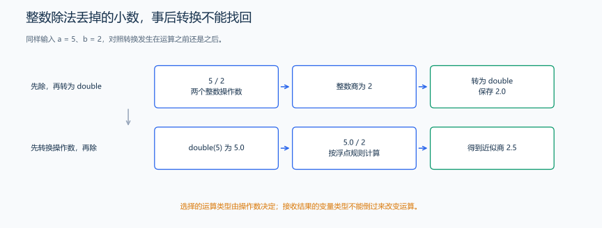
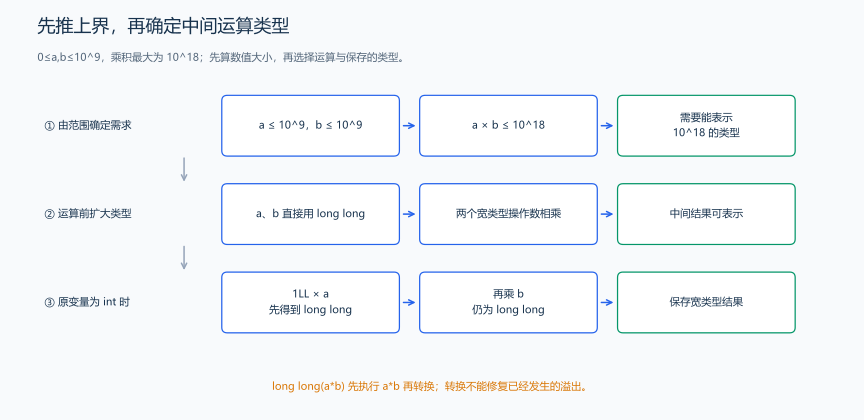

（三） 常量、类型转换与整数溢出
5 除以 2 为什么得到 2，明明用 double 保存了？两个 int 相乘为什么放进 long long 仍出错？两种问题都要沿“操作数 → 表达式结果 → 接收变量”的顺序检查。
1. 常量的声明与命名
每分钟 60 秒是固定换算关系，可以给它一个名称。const 声明只读对象，初始化后保持原值；constexpr 表示能在编译时确定的常量。比如 60 在编译时已经确定，而读入 n 后创建的 const int count=n; 要等运行时才知道数值。
constexpr int secondsPerMinute = 60; // 编译时已知的常量，后续不能重新赋值。
const int limit = 100; // 只读整数，初始化后保持 100。
// 在运行时先读得 n 后，也可写 const int count=n，但它不一定是编译期常量。using ll=long long; 给已有类型起别名，ll 与 long long 是同一种类型；不会改写其他名字中的字符。序言的 #define int long long 则是预处理记号替换。两种写法用途不同，学习代码先用明确的类型观察计算。
2. 整数除法、浮点除法与转换位置
题目原文（自拟）： 输入整数 a、b，满足 \(-10^6\le a,b\le10^6\) 且 b 非零。第一行输出整数商和余数；第二行输出按 double 计算的商，使用默认浮点格式。
推导： a、b 都是整数时，a/b 向 0 截断，例如 5/2 为 2，-5/2 为 -2。static_cast<double>(a) 是显式转换表达式，先得到 double 操作数，再相除；除法就按浮点规则计算。它不修改原来的 a。

#include <iostream>
using namespace std;
int main() {
int a, b;
cin >> a >> b; // 题面保证 b 非零，且商、余数均可表示。
cout << a / b << ' ' << a % b << '\n'; // % 求整数余数。
double ratio = static_cast<double>(a) / b; // 先转换，避免整数除法丢掉小数。
cout << ratio << '\n';
}输入：
5 2输出：
2 1
2.5写成 double ratio=a/b; 时，整数商已经成为 2，赋值只会把这个 2 转成 2.0，不会恢复丢掉的小数。下一节继续用商与余数拆解整数，记住这一步的类型选择。
3. 乘法结果大于单项：在运算前扩宽
题目原文（自拟）： 输入非负整数 a、b，均不超过 \(10^9\)，输出它们的乘积，结果不超过 \(10^{18}\)。
分析： 两输入作为 long long 保存，乘法按 long long 计算；或者先将较窄操作数显式转成 long long。不能先执行可能溢出的 int 乘法，再转换结果。
#include <iostream>
using namespace std;
int main() {
long long a, b;
cin >> a >> b;
cout << a * b << '\n'; // 按题目上界，乘积可由 long long 表示。
}输入 100000 100000，输出 10000000000。若 a、b 为 int，可用 1LL*a*b 或 static_cast<long long>(a)*b；乘法左结合，先有一个较宽操作数，后续才按较宽类型算。static_cast<long long>(a*b) 转得太晚。

有符号整数运算超出类型范围称为溢出，属于未定义行为：程序可能得到错误结果，也可能受编译优化影响。无符号整数按位宽取模，例如最大值加一会回到 0。求总和或乘积时，我们通常需要完整的数学结果，因此先选能容纳结果的类型。
4. 自动转换、窄化与有符号混合
| 情况 | 会发生什么 | 怎样检查 |
|---|---|---|
| int 与 double 运算 | 常见算术转换使运算使用 double | 转换前是否已发生整数运算 |
| double 转整数 | 向 0 截断小数部分 | 例如 2.7 变为 2，-2.7 变为 -2 |
| long long 转 int | 结果受 int 的范围限制 | 只有 int 范围内的数值能保持原值 |
| 有符号与无符号混算 | 可能使负数转成很大的无符号值 | 比较与计算前先弄清两边的实际类型 |
| 花括号窄化 | 一些丢失精度的转换会被编译器拒绝 | 例如 int x{2.7}; 不能这样初始化 |
static_cast<int>(-2.7) 得到 -2：去掉小数部分，向 0 靠近。floor 则向负无穷取整，会得到 -3，数学函数章节会用数轴对照这两种方向。转换后的整数仍要放得进目标类型；long long 中超出 int 范围的数转换成 int 时，C++17 的结果由实现规定，见 C++17 草案：整数转换。
练习题： 洛谷 P5703 — 苹果采购。先按题目给出的答案范围选类型，再写乘法。
类型选择之后，下一节把算术、比较、逻辑和位运算分别练清楚，避免把相似符号当成同一操作。